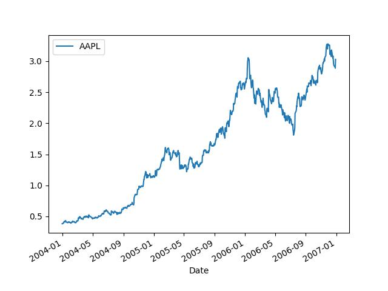

Elimizde bir zaman serisi var, bu seri bir finansal varlığın fiyat seviyesi olabilir, belki bir tahvildir, belki altın fiyatıdır, ilk gün 100 ikinci gün 102 olmuş, böyle gidiyor.
d = np.array([100,102,104.04,106.12,108.24,110.41])Peki bu fiyat seviyeleri günlük hangi yüzde değişimlerine tekabül
ediyor? Bu hesabın pandas ile kolay bir yolu var,
pct_change kullanabiliriz,
import pandas as pd
p = pd.Series(d)
print (list(np.round(p.pct_change(),2)))[nan, 0.02, 0.02, 0.02, 0.02, 0.02]Her gün yüzde 2’lik bir değişim varmış (bu yazı için veri uydururken fiyat seviyelerini ona göre ayarladık).
Şimdi sadece yüzde değişimleri ve başlangıç fiyat seviyesini
kullanarak seriyi tekrar üretebilir miydik? Tek yüzde değişimle bir
sonraki sayıyı nasıl elde ederiz? Mesela 100’den yüzde 2 değişimle
sonraki değere geçeceğiz, kolay, 1 artı 0.02 yani 1.02 değerini 100 ile
çarparız, sonraki sayı çıkar, 102. Bu metotu diğer yüzde değişimler için
kullanabiliriz. O zaman tüm fiyat seviyelerini hesap için eldeki yüzde
değişim listesine 1 sayısını eklersek, 1.02, 1.02, .. elde edilir, ve bu
rakamları başta 100 ile, sonra birbirleri ile çarparsak tüm fiyat
listesini tekrar elde ederiz. Bir dizinin tüm öğelerinin birer birer
çarpılıp bunun kümülatif olarak gösterilmesini cumprod
halleder,
ret = p.pct_change()
100*np.cumprod(1+ret)Out[1]:
0 NaN
1 102.00
2 104.04
3 106.12
4 108.24
5 110.41
dtype: float64Üstteki hesabı bir al-tut stratejisinin performansı olarak ta görebiliriz bu durumda illa baştaki 100 değerini kullanmaya gerek yok, 100 yerine 1 dersek o zaman bu stratejiye koyulmuş 1 liranın, 1 doların ne kadar büyüyeceğini görmüş oluruz. 1 lira 2 lira olduysa mesela bu ikiye katlama demektir, performansın iyi olduğu sonucuna varabiliriz.
1*np.cumprod(1+ret)Out[1]:
0 NaN
1 1.0200
2 1.0404
3 1.0612
4 1.0824
5 1.1041
dtype: float64Yüzde değişimler, kümülatif çarpımlar ile uğraşmamızın bir sebebi var, portföy perfomansına bakarken herhangi bir strateji için gereken alım / satım “sinyallerini’’ her zaman dilimi seviyesinde kolayca dahil edebiliyoruz, ve stratejiyi tartarken bir zaman serisi üzerinden bunu yapabiliyoruz. Elde edilecek serinin istatistiki, matematiksel özellikleri vardır, ve bu özellikler ek özet irdelemelerde faydalı olur, mesela Sharpe oranı gibi.
Sinyalleri şöyle kullanabiliriz, bir varlığı belli bir zaman noktasında almış olmak 1 sinyali ile temsil edilir, varlığın elde olmaması ise 0 ile temsil edilir. O zaman kümülatif hesaptan önce tüm yüzde değişimleri sinyal vektörü ile çarparız, sonra kümülatif hesap yaparız. Eğer sinyal 1 ise o noktada yüzde değişim sıfıra iner, o getiri elde edilmemiş olur, kümülatif hesapta 1+0 = 1, yani hiç bir değişim yaratmaz. Eğer sinyal 1 ise 1 çarpı mesela yüzde 2 getiri yüzde 2 getirinin aktif olmuş olması demektir, o getiri kümülatif çarpıma etki eder.
signal = pd.Series(np.array([1,1,1,1,0,1]))
ret*signalOut[1]:
0 NaN
1 0.020000
2 0.020000
3 0.019992
4 0.000000
5 0.020048
dtype: float64signal = pd.Series(np.array([1,1,1,1,0,1]))
1*np.cumprod(1+(ret*signal))Out[1]:
0 NaN
1 1.020000
2 1.040400
3 1.061200
4 1.061200
5 1.082475
dtype: float64Örnek
Apple senedine bakalım,
import pandas as pd
df = pd.read_csv('../tser_008_data/AAPL.csv',index_col='Date',parse_dates=True)
df.plot()
plt.savefig('tser_011_sign_01.jpg')
Diyelim ki müneccim bir yatırımcı bu senedi ne zaman alıp, satacağını bir şekilde biliyor. 2005-06 civarındaki çıkış öncesi alıyor, o çıkışın tepesinde satıyor, sonra 2006-09’da tekrar geliyor, ve son düşüş öncesi yine çıkıyor. Bu arkadaşın alım / satım stratejisini 1 ve 0 sinyalleri ile temsil edebiliriz.
df['signal'] = 0
filt1 = (df.index > '2005-06-01') & (df.index < '2006-02-01')
df.loc[filt1,'signal'] = 1
filt2 = (df.index > '2006-09-01') & (df.index < '2007-01-01')
df.loc[filt2,'signal'] = 1Stratejinin başarısı ne olur acaba? Üstte gördüğümüz yöntemler ile hesaplayalım,
df['ret'] = df.AAPL.pct_change()
cumret = np.cumprod(1+(df.ret*df.signal))
print (cumret.tail(4))Date
2006-12-26 2.233475
2006-12-27 2.233750
2006-12-28 2.215938
2006-12-29 2.324721
dtype: float64Tüm kümülatif seriye aslında ihtiyaç yok, son gelinen getiri noktası için,
np.prod(1+(df.ret*df.signal))Out[1]: 2.3247214450625857Yüzde 232 gibi bir artış var! Bu stratejiyi yıllık kazanca nasıl çeviririz? Stratejinin uygulandığı tüm zaman dilimlerini alırız, ve getiriyi bir sene, yani 252 zaman dilimi (yıl içindeki iş günü miktarı), için ölçekleriz. Mesela eğer 50 gün için bir getiri \(g\) hesaplamışsak, bu getiriyi yukarı ölçekleyip kabaca \(g^5\) ile yıllık getiriyi hesaplayabiliriz / tüm sene bazına yukarı ölçekleyebiliriz (çünkü \(252/5 \approx 5\)), sonra tüm sonuçtan bir çıkartırız daha önce eklenen 1 etkisini iptal etmek için. Eğer eldeki zaman serisi miktarı 252’den fazla ise alta ölçekleme de yapılabilirdi, \(g^{1/2}\), \(g^{1/5}\) gibi, ama bu hesaplar da yine matematiksel olarak doğrudur ve aynı yöntemle hesaplanır. Elde edilecek olan yıllık yüzde oranı (annual percentage rate), APR,
print ('APR', ((np.prod(1.+df.ret*df.signal))**(252./len(df.ret)))-1)APR 0.32471861974412564Getiri yıllık yüzde 32.47.
Eğer strateji üstteki kadar iyi olmasaydı, mesela yatırımcı 2005-06’da alım yapmış ama senette kalmış, sona kadar satmamış olsaydı, bu durumda,
df = pd.read_csv('../tser_008_data/AAPL.csv',index_col='Date',parse_dates=True)
df['signal'] = 0
filt1 = (df.index > '2005-06-01')
df.loc[filt1,'signal'] = 1
df['ret'] = df.AAPL.pct_change()
print (np.prod(1+(df.ret*df.signal)))
print ('APR', ((np.prod(1.+df.ret*df.signal))**(252./len(df.ret)))-1)2.105210500206348
APR 0.2816374105511763Daha düşük bir getiri elde etmiş olacaktı.
Not: Getiriyi ölçeklerken len(df.ret) ile yukarıdaki
grafiğin tümünü kullandık fakat düşünürsek aslında bu strateji 2004-01
noktasında değil 2005-06 noktasında başlıyor. Bu sebeple tüm seri
aslında daha kısa ve APR bu sebeple daha yüksek olurdu. Neyse örneği
basit tutma amacıyla bu değişikliği yapmıyoruz.
Sinyaller
Varlığı almış olmanın 1, olmamanın 0 sinyali ile belirtildiğinden bahsettik. Aslında sinyal bazlı strateji hesabı sadece bu iki rakamla sınırlı değildir, mesela eksi değer kullanırsak, -1 gibi, bu açığa satış stratejisini kodlayabilirdi. Açığa satışta düşüşten kazanıldığı için zaman serisinin getiri yüzdesi eksi 1 ile çarpılacaktır. Düşüş var ise o değer eksi değerdir ve eksi yüzde çarpı eksi 1 artı değer olacağı için, o değişim kazanç olarak portföye yansımış olacaktır. Değişim -0.01 olabilir, fakat o noktada strateji açığa sat, -1 diyor ise, -1 * -0.01 = 0.01, bu sayı kazanç sayılır.
Sinyaller birden fazla varlığı da kapsayabilir, 0 ile 1 arası birkaç değer kullanırsak (ki bu değerlerin toplamı 1 olmalıdır) o zaman sinyaller portföydeki “dağılımı’’ temsil edebilir. Sinyal 1 sonuçta bir zaman aralığındaki tüm değişimden istifade etmek demektir, eğer mesela 0.5 ile çarparsam değişimin sadece yarısından istifade ediyorum, paranın yarısının o varlığa koymuşum, diğer yarısı 0.5 ile başka bir değişimi çarpabilir, onun kazancı (ya da kaybı) kümülatife yansır.
Alttaki örnekle devam edelim, iki tane zaman serisi görüyoruz, önce onların yüzde değişimlerini hesaplıyoruz,
import pandas as pd
a = np.array([2.0, 2.03, 2.07, 2.11, 2.13, 2.17, 2.25, 2.29, 2.33, 2.4])
b = np.array([4.0, 4.06, 4.11, 4.17, 4.22, 4.28, 4.33, 4.39, 4.44, 4.5])
a = pd.Series(a); b = pd.Series(b)
print (list(np.round(a.pct_change(),2)))
print (list(np.round(b.pct_change(),2)))[nan, 0.01, 0.02, 0.02, 0.01, 0.02, 0.04, 0.02, 0.02, 0.03]
[nan, 0.01, 0.01, 0.01, 0.01, 0.01, 0.01, 0.01, 0.01, 0.01]Bariz şekilde birinci seri ikinciye göre daha çok yükseliyor. Bu
seriler üzerinde yarı yarıya dağılım yaparsak elde edilecek kazancı
hesaplayalım şimdi. DataFrame yaratılır,
df = pd.concat([a,b],axis=1)
df.columns = ['a','b']
print (df)
print (df.shape) a b
0 2.00 4.00
1 2.03 4.06
2 2.07 4.11
3 2.11 4.17
4 2.13 4.22
5 2.17 4.28
6 2.25 4.33
7 2.29 4.39
8 2.33 4.44
9 2.40 4.50
(10, 2)Veri (10,2) boyutlarında, iki varlığın fiyat
seviyelerini gösteren 10 zaman dilimi var. Şimdi sinyali ikiye
bölüyoruz, biri varlık a diğeri b için, dağılım 0.5, 0.5 olacak, bu
dağılımı 10 kere tekrarlayacağız, getirilerin matrisini bu dağılım
matrisi ile çarpacağız, sonucu toplayacağız. Sonuçta elimize aynen tek
varlık durumunda olduğu gibi tek boyutlu bir getiri zaman serisi
geçecek.
Not: Dağılım her zaman diliminde aynı, o zaman niye (10,2) boyutlu bir matris kullandık? Burada göstermiyoruz ama dağılımlar da zamana göre değişebilir, dinamik karakterde olabilir. Bu tür stratejileri ilerideki derslerde göreceğiz.
positions = np.zeros(df.shape)
positions[:,0] = 0.5
positions[:,1] = 0.5
ret = (df.pct_change() * positions).sum(axis=1)
print (ret)0 0.000000
1 0.015000
2 0.016010
3 0.016961
4 0.010735
5 0.016499
6 0.024274
7 0.015817
8 0.014428
9 0.021778
dtype: float64Bu serinin başarısını hesaplayalım,
print (np.prod(1+ret))
print ('APR', ((np.prod(1+ret))**(252./len(ret)))-1)1.1620428461381263
APR 43.01472199080321Eğer dağılım farklı olsaydı,
positions = np.zeros(df.shape)
positions[:,0] = 0.8
positions[:,1] = 0.2
ret = (df.pct_change() * positions).sum(axis=1)
print (np.prod(1+ret))
print ('APR', ((np.prod(1+ret))**(252./len(ret)))-1)1.1847063822264405
APR 70.61274939993416Bu sonuç mantıklı çünkü varlık a daha hızlı artıyordu, ağırlığı oraya daha fazla veren strateji tabii ki daha iyi kazandırır.
Akla gelebilecek sorular, eğer bir seri diğerinden daha iyi getiri veriyorsa niye hep ona, hatta sadece ona ağırlık verilmez? Cevabın ilk kısmı üstteki yapılan test geriye dönük bir test olduğu, geriye dönük test ileri fiyatların garantisi olmaması. Ayrıca veri uyduruk, gerçek dünya şartlarında iki serinin birbirini dengeleyici bazı özellikleri olabilir, mesela genellikle birleşik performansı ortalama olsa da iki seriden birinin sert düşüşünü diğerinin dengeleyici özelliği varsa, portföyün getirisi uzun vadede daha sağlam olabilir.
Birleşik portföy avantajını iyi gösteren bir örnek 60/40 kuralı, yatırımcılıkta bilinen ünlü bir dağılım yatırımın yüzde 60’inin senet yüzde 40’inin tahvil olması tavsiyesidir. Acaba bu dağılım hakikaten işliyor mu? Geri dönük testlerle kontrol edebiliriz.
Veri SP 500 indisini baz alan SPY ve tahvilleri baz alan
AGG fon fiyatları olacak [2,3]. Bu iki zaman serisini genel
bir borsa, ve tahvil fiyatı yerine kullanacağız. Farklı karışım oranları
deneyeceğiz, ve her dağılım için getiri performansını
hesaplayacağız.
import pandas as pd
df = pd.read_csv('eqbnd.csv',index_col='Date',parse_dates=True)
df = df[(df.index > '2003-01-01') & (df.index < '2010-01-01')]
positions = np.zeros(df.shape)
print ('Senet Tahvil')
for x in np.linspace(0,1,11):
x = np.round(x,4)
positions[:,0] = x
positions[:,1] = 1.0-x
ret = (df.pct_change() * positions).sum(axis=1)
print ('%0.3f %0.3f %0.3f' % (x, np.round(1-x,2), np.round(np.prod(1.0+ret),3)))Senet Tahvil
0.000 1.000 1.318
0.100 0.900 1.347
0.200 0.800 1.373
0.300 0.700 1.394
0.400 0.600 1.410
0.500 0.500 1.421
0.600 0.400 1.427
0.700 0.300 1.429
0.800 0.200 1.425
0.900 0.100 1.416
1.000 0.000 1.402Sonuca göre 60/40 iyi gözüküyor, gerçi 70/30 en iyisi. Demek ki bahsedilen dağılımın iyi performans verdiği doğruymuş. Ayrıca dikkat edersek bahsedilen oran her iki varlığın tek başına olan performansından daha iyi.
ret = ge_df.SPY.pct_change()
print ('Senet',np.round(np.prod(1.0+ret),2))
ret = ge_df.AGG.pct_change()
print ('Tahvil',np.round(np.prod(1.0+ret),2))Senet 1.4
Tahvil 1.32Not: Üstteki hesap her şartta işleyen yatırım tavsiyesi olarak alınmasın, 60/40 kuralının artık işlemediği de söyleniyor, ayrıca her ülke piyasası diğerine benzemeyebilir. Her strateji işletilmede önce güncel veri ile test edilmelidir.
Kaynaklar
[1] https://www.quantstart.com/qstrader/tutorial-60-40-portfolio/
[2] https://finance.yahoo.com/quote/SPY/